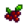

Agricultura
La Agricultura es la habilidad de plantar, cultivar y cosechar semillas en tu granja. Es una de las principales fuentes de ingresos en el juego y proporciona muchos ingredientes para cocinar.
Mientras cultivas o riegas, puedes pararte en el medio de un cuadrado 3x3 y usar el botón derecho del ratón para tener acceso a los 9 cultivos más rápidamente.
Para plantar cultivos primero hay que arar el suelo con la Azada. Si se quiere usar fertilizante, hay que depositarlo en el suelo antes de colocar las semillas. La cosecha necesita ser regada todos los días, excepto aquellos días en los que esté lloviendo (Se regará naturalmente).
Si el jugador no riega el cultivo un día, este no se morirá, pero pasará ese día sin crecer, lo cual retrasa el crecimiento un día.
 Habilidad de Agricultura
Habilidad de Agricultura
El nivel de habilidad de Agricultura se puede ver en la pestaña de habilidades del menú de pausa. Cada nivel otorga +1 de habilidad con la Azada y con la Regadera. Los niveles son obtenidos mediante la cosecha de cultivos, acariciar a los animales de la granja, ordeñar las vacas y cabras, extraer la lana de ovejas, y recoger productos de animales dentro de los establos o corrales (huevos, plumas de pato, lanas, patas de conejo).
| Nivel 1 | Nivel 2 | Nivel 3 | Nivel 4 | Nivel 5 | |
|---|---|---|---|---|---|
| Permite fabricar: | Permite fabricar: | Permite fabricar / cocinar: | Permite fabricar: | Elige una profesión | |
|
(La bonificación se aplica a todos los Vegetales y Flores, además de cualquier Fruta que no haya sido recolectada) | ||||
| Nivel 6 | Nivel 7 | Nivel 8 | Nivel 9 | Nivel 10 | |
| Permite fabricar: | Permite fabricar: | Permite fabricar: | Permite fabricar: | Ranchero: | Labrador: |
(También mejora la calidad de los productos del corral, ver detalles aquí) |
| ||||
(También mejora la calidad de los productos del establo, ver detalles aquí) |
| ||||
Puntos de experiencia
La cantidad de experiencia obtenida al cosechar cultivos varía de cultivo en cultivo, con crecimiento más lento y cultivos más caros dando mayor experiencia al cosechar. Los cultivos que dan varias producciones por cosecha, como el Arándano, o patata, solo darán experiencia para la primera cosecha y no ofrecerán experiencia extra para las cosechas posteriores.
Acariciar un animal de granja, ordeñar una vaca o cabra, extraer lana de una oveja, o recolectar productos animales en un corral o establo darán 5 puntos puntos de experiencia cada uno. (Recolectar trufas dará puntos de experiencia de Recolección y no de Agricultura).
Para subir del nivel 0 al 1, requiere 12 chirivías, o 5 coliflores, u 8 patatas,. Del nivel 0 al 2, requiere alrededor de 48 chirivías, o 17 coliflores, u 28 patatas.
| Primavera | |
|---|---|
| Cultivo | XP |
| 4 | |
| 7 | |
| 7 | |
| 8 | |
| 8 | |
| 9 | |
| 10 | |
| 12 | |
| 14 | |
| 17 | |
| 18 | |
| 23 | |
| 26 | |
| 38 | |
| 14 | |
| Verano | |
|---|---|
| Cultivo | XP |
| 4 | |
| 6 | |
| 6 | |
| 9 | |
| 10 | |
| 12 | |
| 10 | |
| 14 | |
| 15 | |
| 15 | |
| 20 | |
| 27 | |
| 28 | |
| 44 | |
| 38 | |
| 14 | |
| 16 | |
| 30 | |
| Otoño | |
|---|---|
| Cultivo | XP |
| 6 | |
| 10 | |
| 12 | |
| 14 | |
| 14 | |
| 14 | |
| 16 | |
|  Grosella | 14 |
| 21 | |
| 22 | |
| 22 | |
| 29 | |
| 31 | |
| 38 | |
| 64 | |
| 14 | |
Los puntos de experiencia ganados son calculados usando la fórmula XP=||16 × ln(0.018 × PRECIO + 1)||, con "PRECIO" siendo el precio de venta del cultivo, porque la experiencia está basada en el valor de venta del cultivo, la calidad de oro y plata agregan un pequeño valor a la experiencia obtenido al cosechar los cultivos.
Cosechar plantas recolectables que han crecido en la granja cuentan como 3 puntos de experiencia en recolección por planta, en vez de puntos de agricultura.
El nivel de experiencia se incrementa después de ir a dormir.
| Nivel | Total de chirivías cosechadas | Experiencia |
|---|---|---|
| 1 | 13 | 100 |
| 2 | 48 | 380 |
| 3 | 97 | 770 |
| 4 | 163 | 1300 |
| 5 | 269 | 2150 |
| 6 | 413 | 3300 |
| 7 | 600 | 4800 |
| 8 | 863 | 6900 |
| 9 | 1250 | 10000 |
| 10 | 1875 | 15000 |
Cultivos
| Cultivos | |
|---|---|
| Primavera | Ajo • Allium azul • Arroz sin moler • Chirivía • Col rizada • Coliflor • Fresa • Grano de café • Judía verde • Patata • Ruibarbo • Tulipán • Zanahoria |
| Verano | Amapola • Arándano • Carambola • Calabaza amarilla • Chile • Girasol • Grano de café • Lentejuela de verano • Lombarda • Lúpulo • Maíz • Melón • Rábano • Tomate • Trigo |
| Otoño | Alcachofa • Amaranto • Berenjena • Brócoli • Calabaza • Col china • Girasol • Grosella • Maíz • Ñame • Remolacha • Rosa hada • Trigo • Uva |
| Invierno | Melón de polvo |
| Especial | Baya de gema dulce • Fruta milenaria • Fruto Qi • Higo chumbo • Hojas de té • Piña (fruta) • Raíz de taro |
Historial
- 1.0: Introducido.
- 1.1: Ajustado el bonus de Ranchero, del 10 al 20%. Artesano ahora incrementa el valor de los Productos artesanales en 40% en vez de 50%.
| Habilidades y Estadísticas | |
|---|---|
| Habilidades | Agricultura • Combate • Minería • Pesca • Recolección |
| Estadísticas | Ataque • Daño crítico • Defensa • Golpe crítico • Inmunidad • Magnetismo • Peso • Suerte • Velocidad |